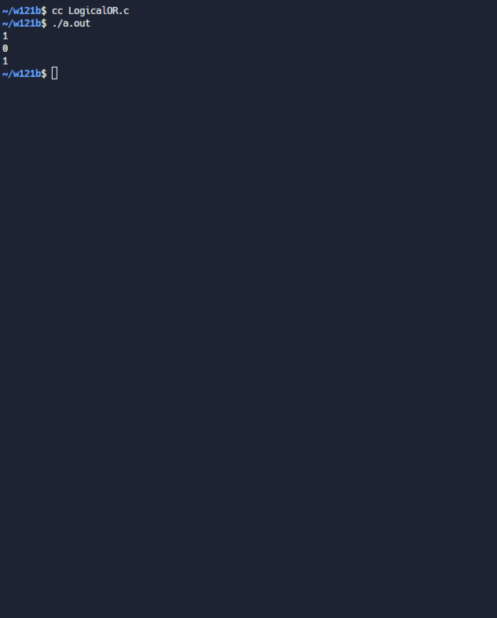

練習2 <<
Previous Next >> 2.sizeof( type ) 取得特定型別的 size
1.(||)運算元傳回值與 (&&) 一樣, 但不同的是, 當 (||) 運算元兩邊的運算子之值都為 0 時, 則會傳回 0, 否則傳回 1
/* ====================
邏輯或運算子。
==================== */
#include <stdio.h>
void main()
{
printf("%d\n", 1 || 0);
printf("%d\n", 0 || 0);
printf("%d\n", 2 || 2);
}

練習2 <<
Previous Next >> 2.sizeof( type ) 取得特定型別的 size